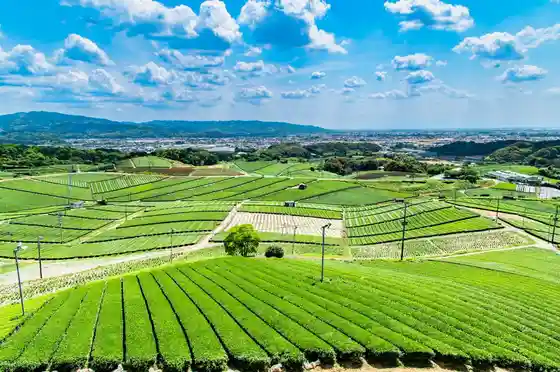
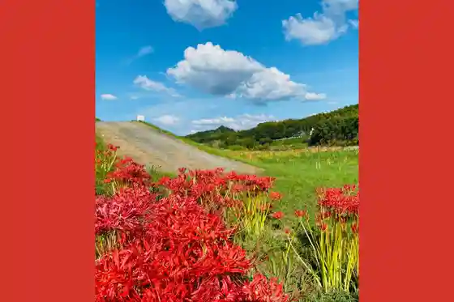
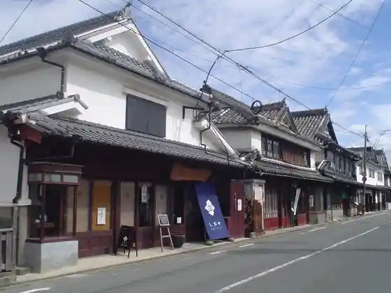
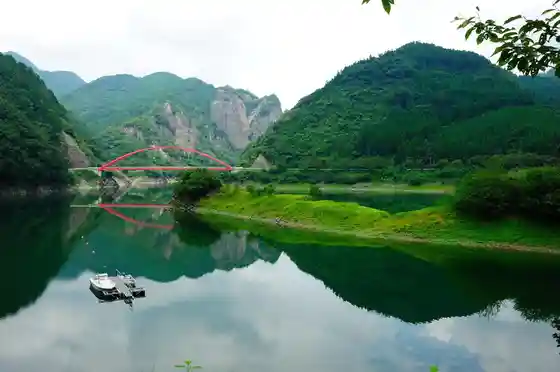

Yame Joyo Festival
Yame, Fukuoka · 0943-54-2211 · Official / source link
Yame Chuodai Chaen
Yame, Fukuoka · 0943-22-6644 · Official / source link

Yabe Kawazoi no Higan Hana
Yame, Fukuoka · 0943-22-6644 · Official / source link

Yame Fukushima no Shirakabe no Streetscape
Yame, Fukuoka · 0943-22-6644 · Official / source link

Hyuga Kami Kyo
Yame, Fukuoka · 0943-47-3111 · Official / source link

Yabe Kawa no Kosumosu
Yame, Fukuoka · 0943-22-6644 · Official / source link
Hoshi no Bunka Kan
Yame, Fukuoka · 0943-52-3000 · Official / source link
Bengara Village
Yame, Fukuoka · 0943-22-8826 · Official / source link
Hikyo Soma no Sato Keiryu Park
Yame, Fukuoka · 0943-47-3000 · Official / source link
Yame Dentokogei Kan
Yame, Fukuoka · 0943-22-3131 · Official / source link
Cha no Bunka Kan
Yame, Fukuoka · 0943-52-3003 · Official / source link
Yoshibi no Tanada (Yame Kuroki Town)
Yame, Fukuoka · 0943-42-1112 · Official / source link
Green Monster
Yame, Fukuoka · 090-2766-5556 · Official / source link
Yame Te Suki Washi Museum
Yame, Fukuoka · 0943-22-3131 · Official / source link
Yame Kanko Bussan Kan Tokimeki
Yame, Fukuoka · 0943-22-7730 · Official / source link
Yame Kuroki Oto Festival (Susano Shrine)
Yame, Fukuoka · 0943-42-1112 · Official / source link
Guriinpia Yame Rejapuru
Yame, Fukuoka · 0943-42-2400 · Official / source link
Roadside Station Tachibana
Yame, Fukuoka · 0943-37-1711 · Official / source link